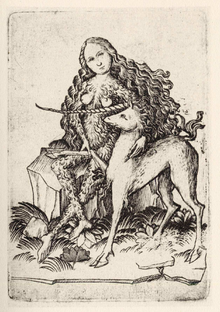

Avant que Carl Gustav Jung ne lui consacre une quarantaine de pages dans Psychologie et Alchimie en 1944, la licorne n'intéresse pas tant psychanalystes et symbologuesFa1 1. Souvent associée à la forêtR 35, la licorne est avant tout rapprochée de la femme, comme le démontrent de multiples récits la décrivant en compagnie d'une jeune viergeFa1 37,Jo 5. Son pelage blanc rappelle la lune, astre symbole de la féminitéFa1 37. Sa pureté et sa chasteté s'opposent au lion, au pelage beige ou doré et à la crinière flamboyante, animal solaire et masculin par excellenceFa1 37. D'après les bestiaires médiévaux, la licorne a pour ennemi naturel l'éléphant, et s'oppose plus tard au lionFa1 37. La « lettre du Prêtre Jean », un faux de la fin du xiie siècle, raconte le combat entre un lion et une licorne en ces termes « Le lyon les occit moult subtillement, car quand la licorne est lassée, elle se mect de costé ung arbre, et lion va entour et la licorne le cuyde fraper de sa corne et elle frappe l'arbre de sy grant vertus, que puys ne la peut oster, adonc le lyon la tueH 52. »
